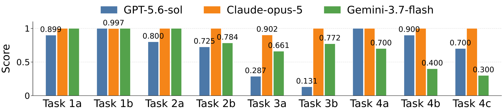
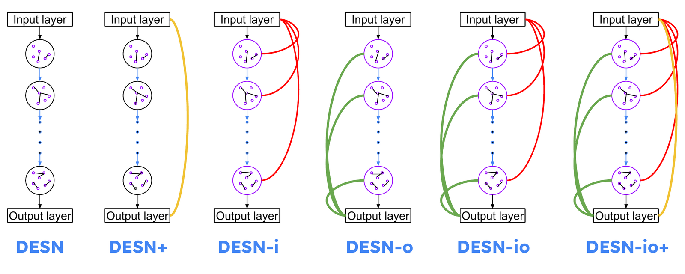

About
I'm a PhD student in Computational Science and Engineering at Georgia Tech, advised by Prof. Elizabeth Cherry, with an expected graduation date of May 2029. I work on forecasting complex time series with machine learning and on evaluating large language models as judges. I received my MS in Computational Science and Engineering from Georgia Tech in May 2026.
I develop variations of echo state networks (ESNs), including deep and hybrid ESNs, to improve the accuracy of time series prediction on real-world data such as cardiac electrophysiology recordings. I also evaluate large language models (LLMs) and vision-language models (VLMs) as judges for recognizing dynamical properties such as complexity and chaos in scientific time series.
Research

Benchmarking LLM Judges on Scientific Time Series
I build controlled benchmarks that test whether large language and vision-language models evaluate the property they are asked to judge. Using scientific time series where complexity and chaos vary independently with known ground truth, I compare models across ranking, outlier detection, clustering and pairwise tasks, and analyze their reasoning to see when they rely on the right features and when they fall back on plausible but incorrect proxies.

Deep Echo State Networks for Complex Time Series Prediction
I develop variations of echo state networks, including deep (multi-layer) and hybrid knowledge-based ESNs, to forecast complex time series. Deep ESNs improved prediction accuracy over same-size baseline ESNs by up to 65% on chaotic Mackey–Glass data and 14% on experimental zebrafish cardiac voltage recordings, and deep structures made predictions more robust. Published in Chaos (2025).